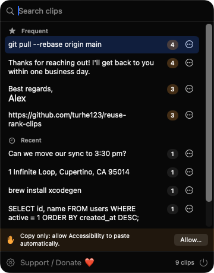
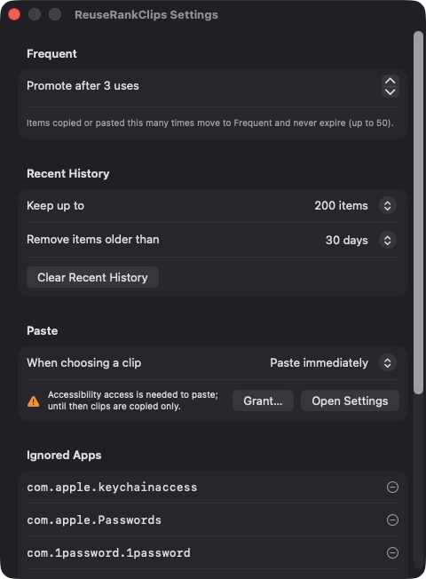
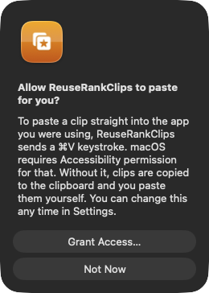

Automatic promotion
Each distinct text is counted every time it is copied or pasted back. At your threshold (3 by default, 2 to 20) it moves into Frequent, where it never expires.
Open source · macOS 14+ · Universal binary · Clipboard
ReuseRankClips counts what you copy and promotes the text you reuse into a Frequent list above your history. Press ⌘⇧V, pick a clip, and it pastes into the app you were using.
Free & MIT licensed · Apple Silicon & Intel · Latest release

Features
A menu bar clipboard that sorts itself, keeps your data local, and stays out of your way.
Each distinct text is counted every time it is copied or pasted back. At your threshold (3 by default, 2 to 20) it moves into Frequent, where it never expires.
The popup shows Frequent clips first with a use-count badge, then Recent. Rename, pin, demote or delete any clip from a right-click menu.
Open the popup with ⌘⇧V, or set your own shortcut. Type to filter by text or label, use the arrow keys to move, Return to paste, Escape to close.
Items flagged as concealed or transient by password managers are skipped, as are clips from apps on your ignore list and anything over 1 MB.
Keep 50 to 1000 recent items and expire them after 1 day, 1 week, 30 days, 90 days or never. Frequent and pinned items are never removed.
Clips are saved as a JSON file on your Mac. The app makes no network connections and needs no account.
Screenshots


Install
ReuseRankClips is open source and not notarized with a paid Apple Developer ID, so macOS needs one extra step the first time.
xattr -cr /Applications/ReuseRankClips.app
Download
Free, forever. Built for macOS 14 Sonoma or newer, Apple Silicon and Intel.
Not notarized: on first launch right-click ReuseRankClips.app → Open.
FAQ
Yes. It is released under the MIT license, and the full source is on GitHub. There are no accounts, subscriptions or paid tiers an optional Support button opens a Ko-fi page if you want to chip in.
Only Accessibility, and it is optional. macOS requires it for the app to send the Command-V keystroke that pastes into your previous app. If you decline, clips are still copied to the clipboard for you to paste manually. The app asks for no other permissions.
In a single JSON file at ~/Library/Application Support/ReuseRankClips/clips.json on your Mac. Nothing is sent anywhere, and only plain text is captured. Delete the file or use Clear Recent History to remove it.
Notarization requires a paid Apple Developer account, and this is a free project. Right-click the app and choose Open once to launch it, or build it yourself from source with Xcode.
Yes. ReuseRankClips was generated by Claude Code from a written spec as a clean-room reimplementation, with no code or assets from any commercial app. The full source is on GitHub under MIT, so you can read every line before you run it. It has had less human review than a hand-written app, so bug reports are welcome.
Support ❤️
ReuseRankClips is a free, open-source alternative to paid utilities. If it earns a spot on your Mac, a coffee keeps the updates coming.
☕ Support Or on Ko-fi